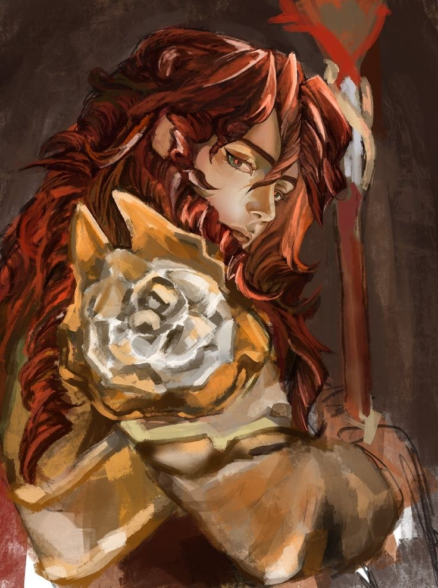

Sonzai Moto
Prince of the North · The Calamity
I. Identity
Full Name: Sonzai Moto
Age: 13
Race / Lineage: Human · Moto, the Kōkan, the red line; Greymane through his mother
Faction: House Moto at Kharven-Seat. Second son of King Muken Moto and Queen Amelia Greymane.
Epithet: Unnamed.
Status: Alive
Family: Father Muken Moto; mother Amelia Greymane; brother Sodoku (13, the crown prince); sister Mizuyi, taken by Cozbi Mahuo on the night of her betrothal; younger brothers Tenma (12) and Kimizu (10).
Current Location: Kharven-Seat, gone out of the great hall onto the stair with Lorn Stark behind him, the night Mizuyi was taken
Catalyst Event: The night Mizuyi was taken, when Cozbi Mahuo said “let the games begin.”
II. Soul Architecture
| Stat line | Stage VI Glory · Expert (Faceted) Level 155 · Refined · Class offered, not yet named Fate VI Mastered, I · Body V Walked 50%, not yet read · Lenses: home + 1 |
| Level | 155; it holds Glory (115) and would hold Refraction (130), and no Residual Strain builds in him short of 200 |
| Stage | VI, Glory · Expert; the Stage roofs every Sub-Stat at 400 |
| Path | Fate VI Mastered · Body V Walked 50% |
| Mastery | Fate I, Touched: the lead, at Glory’s ceiling. The Moto blood opened it early, and the Work of Ruin is his grip · Body: Walked a rung behind a lead of I, and not yet read |
| Yield (η) | 0.65, Fate I’s figure |
| Lenses | home Tarturon + 1 held (Cataclysm), the Expert’s count |
| Class | offered at Glory, not yet named |
| Soul Crystal | Faceted, Refined |
| Fate Art | Ruin, gripped his own way, on Obsession Force, with heavier knots · grip · Fate I |
| Points | 4,113 |
A new way of Hataraki. The Works of the house read a thing’s job and enforce it, and the Work of Ruin closes only on what is already failing. Sonzai reads nothing. His grudge makes a thing unsound, and then it falls. It runs on Obsession Force, a way of gripping that any Fate soul may take up and an exception to nothing: thread pulled down and held by force past the working it was pulled for, never let go, its knots the heavier for it. In a house whose law is “the offense is inaccuracy,” it is heresy, and it works.
III. Wellspring Harmonizations
| Wellspring | Folk name | Kind | Titan | Operation | Hue | Depth | What it does in him |
|---|---|---|---|---|---|---|---|
| Tarturon | the Fire of Reckoning | Fate | Dazkar | calcination | hot amber-red | deep | Power that rises with the debt he believes is owed, and that nothing can smother once lit. At home on Fate it draws the odds up the line toward the one man the debt is owed by, which is TATARI’s whole engine. Strengthens Flux under moral weight, Overflow and Fortification. |
| Cataclysm | the Blast | Wild | Valmir | calcination | white-orange flash, pale ring | held | On the Body side: given a set stance or a wall at the enemy’s back, a blow stops being a push and goes over all at once into a blast. Strengthens Cascade, Overchannel and Radius. |
Aura: hot amber-red, the Fire of Reckoning, which never banks down to embers. When the grudge is on him it flares white-orange at the edges, and the white rose on his armor begins to redden.
IV–V. Stats
A normal look shows the Eight Primaries; a Primary is the total of its eight Sub-Stats, read by their mean (Dominion’s over seven, Throne outside it). Room to grow: every Primary sits under the Stage’s cap.
| Primary | Total | Sub-Stats |
|---|---|---|
| Vitality | 569 | Fortitude 89 · Absorption 54 · Constitution 70 · Hemostasis 54 · Regeneration 47 · Filtration 43 · Tolerance 54 · Threshold 158 |
| Ardency | 662 | Flux 123 · Alacrity 70 · Depth 77 · Penetration 123 · Compression 54 · Cascade 98 · Overchannel 70 · Density 47 |
| Gnosis | 459 | Perception 84 · Acuity 47 · Forecast 43 · Fluency 38 · Retention 112 · Analysis 43 · Cognition 38 · Vigilance 54 |
| Dexterity | 566 | Celerity 103 · Reflex 107 · Finesse 96 · Economy 43 · Evasion 61 · Grapple 47 · Feint 43 · Sequence 66 |
| Harmonics | 323 | Attunement 43 · Projection 77 · Breadth 27 · Stability 33 · Empathy 29 · Synergy 38 · Axis 43 · Suppression 33 |
| Resilience | 550 | Integrity 61 · Ward 54 · Persistence 147 · Anchoring 89 · Fortification 47 · Hardening 43 · Oath 43 · Continuity 66 |
| Tempering | 420 | Clarity 47 · Overflow 126 · Maturity 38 · Coherence 33 · Tempering Yield 43 · Ceiling 43 · Capacity 47 · Longevity 43 |
| Dominion | 564 | Radius 47 · Sovereignty 43 · Sense 77 · Gravity 43 · Pressure 100 · Command 54 · Fate 200 · Throne 0 |
VI. Force of Hand
No measured strike on file. His blows lean on Penetration 123 and Cascade 98, and Cataclysm turns a pinned blow into a blast.
VII. Aether Flow
| Reserve | 254,718 EU, held as charge 50% · essence 50% (the Body half held as Charge in the Shell, the Fate half as Essence), by the law of reserves at Level 155 |
| Flux Density | 900 EU/g |
| Yield (η) | 0.65, Fate I |
| AU/s | 585.0 at full output |
| From full | about 7.3 minutes of full output, far longer at the pace of a lesson or a quarrel |
| A Fate pull | at Fate I, 0.60 to 0.70 of what he spends arrives; Fate’s price is the knot, and held on Obsession Force his knots run heavier |
VIII. Traits
Full accounts: Sonzai Moto — Abilities
Every Trait reads at his lead Mastery, Fate I.
TATARI (祟り), the Calamity · Primary Trait
TATARI is basically Calamity Manipulation: the power to make misfortune hunt down whoever wronged him. Sonzai never forgives and never forgets. Every wrong done to him goes into his memory and stays there, and the longer he holds it, the stronger it grows. Most people who pull on fate pay a debt for it afterward, as bad luck that comes back on them. Sonzai holds onto that debt so hard that it lands on the person he hates instead. Straps snap on them, roofs fall on them, horses throw them, wells go sour in their halls, and nothing anyone does can explain why. It breaks the oldest rule of his house: the Moto read what a thing is meant to do and enforce it, and their Ruin only brings down what was already failing, while Sonzai’s grudge makes a thing ready to fall, and then it falls. It only works on a real wrong, and only on one target at a time. If he ever lets go, or his target dies before he is finished, every bit of that held calamity comes home to him at once.
ONNEN (怨念), the Deep Grudge · Secondary Trait
ONNEN is basically Revenge Empowerment: the power to keep going for as long as the person who wronged him is still alive. It was born the night Mizuyi was taken, when Cozbi Mahuo said “let the games begin” and Sonzai decided he would never let it go. While his target lives, Sonzai cannot be stopped. He ignores pain, does not tire, and gets back up from wounds that should have dropped him, because his soul will not let his body quit before the debt is paid. It works hand in hand with TATARI: the calamity hunts his enemy, and Sonzai keeps walking toward them through anything in the way. The price comes at the end. Once the target is dead or out of reach, the Trait lets go all at once, and every wound he ignored and every night he did not sleep arrives together. Without someone to hold on to, he may not get back up.
IX. Domain
None.
X. Techniques
TATARIGAMI (祟り神), the Calamity God · Signature Art
TATARIGAMI is basically Misfortune Embodiment: the power to become calamity itself for whoever wronged him. In the old stories a tatarigami is an angry spirit that brings disaster on those who offended it, and Sonzai’s grudge becomes exactly that. When he calls it, the grudge rises over his target as a red omen, and the world begins to turn against them. Beams crack over their head, the ground goes bad under their feet, their horse balks, their sword slips, and their luck runs out all at once and keeps running out. None of it looks like magic. It looks like the worst day of someone’s life, over and over, until they break. It runs on TATARI and ONNEN together: his grudge makes things ready to fall, the calamity hunts the target, and Sonzai keeps walking toward them through all of it.
- KYŌCHŌ (凶兆), Ill Omen · He marks the target. They begin to see signs everywhere, a red bird on the sill, a crack in their cup, their name misspoken, and everything that happens to them from then on goes wrong.
- FALLING SKY · Everything above the target comes down at once: beams, banners, stone, the roof itself.
- SOURED GROUND · The earth under them turns against them. Footing gives, wells go bad, and the floor of their own hall will not hold them.
- HYAKUSAI (百災), the Hundred Misfortunes · The finisher. Every bad thing that could happen to them happens at the same moment.
The tell: the white rose on his golden armor reddens petal by petal as the grudge grows. When it is fully red, the Calamity God is ready.
The price: his knots are the heaviest in the house, the calamity does not care who is standing next to the target, and the more he uses it, the narrower his world grows around the one person he hates.
Combo with Sodoku (unnamed; they argue about it): Sodoku ties a target’s thread to one spot with MUSUBIME, and Sonzai brings TATARIGAMI down on the knot. The calamity cannot miss, because the meeting was already written.
XI. Spirit Axes
Sodoku (brother) The one who catches him, and the one bond his obsession cannot eat. Sodoku is all that stands between him and the bottom.
Mizuyi (sister) Taken out of the hall in front of him. He went for the dark with his bare hands and got four strides.
Cozbi Mahuo The first name in the bottom drawer.
Rashani Zettari “We don’t need your damn help, Zettari.”
Lorn Stark Sent after him by his brother, to keep him on this side of the line.
XII. Resistances
- Threshold 158: pain does not stop him. ONNEN carries that further while his target lives.
- Persistence 147: a working that would wear him down finds him still standing.
- Harmonics E: the weakest thing he has. He does not tune to anyone; obsession has already narrowed him, and allies’ help lands poorly on him.
XIII. Physical Description
Hair: Dark red and heavy, falling in loose waves well past the shoulders, wild when it comes out of its tie.
Eyes: Pale green, sidelong and heavy-lidded, and in anger wide and wet and furious.
Face: Fine-boned and sharp, his father’s face at the Foot when the cold goes out of it.
Dress: Golden plate over the shoulder, high at the collar and swept up into points, with a great white rose worked in relief on the pauldron.
Carries: A long red-hafted weapon with a red head, and a ring at his hip.
XIV. Psychology
Before: The cold one. The boy who noted everything and kept it in a drawer, who could stand in a gate with his back to an insult and feel nothing but interest.
After: On the night Mizuyi was taken the drawer broke. What was left was his father’s face at the Foot, and a grudge he means never to put down.
Voice: Blunt, fast, in plain words when he is angry, driving straight on over a break in his voice.
XV. Equipment
| Item | What it is | Grade | Rarity | Note |
|---|---|---|---|---|
| Gilt plate | golden plate over the shoulder, high at the collar and swept into points, a white rose worked in relief on the pauldron | C | Uncommon | the rose reddens petal by petal as his grudge grows |
| The red-hafted weapon | long, red-hafted, with a red head | C | Uncommon | name and maker not known |
| The ring at his hip | carried at the belt, reached for when he goes | not known | not known | what it does is not known |
XVI. Temperance Record
- Stage I, Murmuring: woke young, as Kōkan children do.
- Stage II, Welling: crossed in the yard at the Seat.
- Stage III, Ascension: TATARI woke with it, the first time a boy who had wronged him fell down the stair.
- Stages IV and V, Flourishing and Splintering: crossed in the yard, always a step behind his brother and never by much.
- Stage VI, Glory: crossed at thirteen. A class was offered; he has not yet taken it.
- Next gate: Stage VII, Refraction; it holds at Level 130, which his 155 already passes, so only the Catalyst is wanting; past Level 200 without it he would come into Residual Strain.
XVII. Fracture Log
- When the dark took Mizuyi, went for the door with his bare hands and was caught by his brother on the fifth stride.
- Swore at the table to go down the Kessen road and burn Cozbi Mahuo’s capital to the ground.
- Pushed his brother off and walked out of the great hall, telling Rashani Zettari the Moto did not need the Zettari’s help. Lorn Stark followed him.
- ONNEN, the Deep Grudge, woke the night Mizuyi was taken.